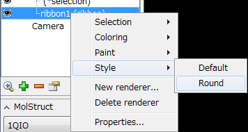
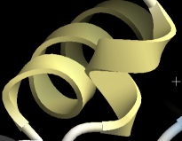
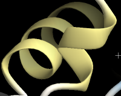
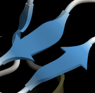
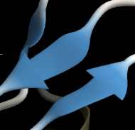
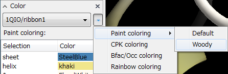
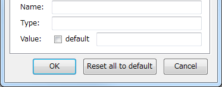

Style
About Styles¶
CueMol2 has various properties for each renderer, enabling more diverse expressions compared to other molecular viewers, but conversely, there were too many options, creating the problem of "setting each one individually being troublesome."
Therefore, we introduced the concept of styles to enable batch setting of properties like presets.
Styles Operable from UI¶
Currently (2.0.0.124), several styles are defined in the system and can be selected and used from the UI.
Styles Related to Shape¶
Basically, styles can be specified from the context menu displayed by right-clicking on renderers in the Scene panel.
For example, when you create a ribbon renderer and display the context menu, the following appears:

When you select Round here, the shape of the ribbon renderer changes as follows:
-
Helix:
 →  -
Sheet:
 → 
In addition to Ribbon, several system-defined styles can also be applied to other renderers such as ballstick and atomintr.
Styles Related to Paint¶
Styles related to Paint (coloring) are defined independently of shape and can be specified from the Color panel.
First, select the target renderer to apply the style to in the Color panel, press the ▼ button on the right to display a dropdown menu, and select "Paint coloring" to see preset styles as selection options as shown in the figure.

Currently there are only Default and Woody, but changing to Woody changes to the plant-like (?) coloring that was the default coloring in CueMol1.
{kind=link}
Styles Not Working!?¶
While styles can be specified in batch as described above, as you experiment with various settings, you may encounter situations where styles are ignored even when specified.
This is because, as explained in the conceptual discussion below, style values are being overwritten by user-specified values.
In any case, if you want to make styles effective, press the Reset all to default button in the property settings dialog. However, of course, individually specified values from the dialog will be lost.

Alternatively, as shown in the figure above, the Generic tab of the property settings dialog has a default checkbox for each value, and by turning this ON, you can reset values to default (i.e., make styles effective).
Conceptual Discussion¶
Default Values of Properties¶
CueMol2 renderers etc. have properties (name-value pairs), and many properties have default values that are applied when users don't specifically specify values.
These default values are determined at the CueMol2 source code level, so they cannot be changed later.
Default Values and Styles¶
On the other hand, when you apply a style to a renderer, default values are replaced with values defined in the style.
The following figure schematically represents this:

For example, in the case of width in the figure, when no style is applied at all, the value 0.5 in Default values on the left side is used, and display is performed according to that value.
Furthermore, when a (system-defined) style is specified, the value 0.1 in System settings in the center is used, and the default value 0.5 is ignored.
Furthermore, when you directly specify a value in the property settings dialog (in this case, specifying 1.0), User specified values are used as shown on the right side, and both the default value (0.5) and style definition value (0.1) are ignored, with user-specified values taking highest priority.
System Style Definition Files¶
System-defined styles are described in the system style definition file located at:
On Windows:
<CueMol2 folder>\data\default_style.xml
(CueMol2 folder is the CueMol2 installation directory, for example C:\Program Files (x86)\CueMol 2.0)
On macOS, it's located at:
<CueMol2.app>/Resources/data/default_style.xml
inside CueMol2.app, so it cannot be directly accessed from Finder etc., but can be viewed from Terminal etc.
While you could add new styles by editing this content, direct editing is not recommended because this file is overwritten and deleted by the installer during installation.
On the other hand, as shown in the conceptual diagram above, there are User-defined and Scene-defined layers, and we plan to enable users to define and use styles at these levels from the user interface in the future.